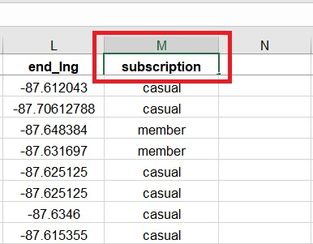
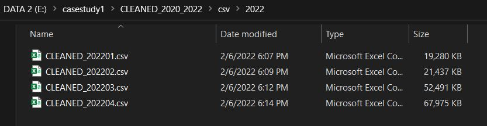

Data Analytic
The Scenario
You are a junior data analyst working in the marketing analyst team at Cyclistic, a bike-share company in Chicago. The director of marketing believes the company’s future success depends on maximizing the number of annual memberships. Therefore, your team wants to understand how casual riders and annual members use Cyclistic bikes differently. From these insights, your team will design a new marketing strategy to convert casual riders into annual members. But first, Cyclistic executives must approve your recommendations, so they must be backed up with compelling data insights and professional data visualizations.
The Data
All information about the data can be found by viewing the dataset used. In summary, Cyclistic is a fictional bike share company based in Chicago. Divvy is a real bike share company based in Chicago. Divvy makes some of their data available for public use. This is the data used for this case study The data has been made available by Motivate International Inc. under this license.
The Tools Used
All tools listed in this project, involved in exploring, cleaning, tranforming, arranging, visualizing all the dataset used. All tools are as follows:
- Microsoft Excel
- Google Spreadsheet
- MySQL Database
- Tableau
Six Important Analytic Steps
The Google Data Analytics Certificate program provides a six step data analysis process. This is the process that will be followed here. The six steps are as follows:
1. Ask
2. Prepare
3. Process
4. Analyze
5. Share
6. Act
Phase 1: Ask
The objective of this step is to identify the key stakeholders in the project or analysis, clearly define the business task, and ensure the problem in question is fully understood. The step involves asking questions of the stakeholders to fully understand their needs before beginning the analysis. As this is a case study based on a fictional company, and the business task is very clearly defined for us, as well as who the stakeholders are, there is not much to do here. In summary, the stakeholders would be the fictional Director of Marketing, Lily Moreno, who has assigned the project, the marketing analytics team who is responsible for identifying a strategy to reach the goal, and the executive team who will make the final decision of whether to proceed with the marketing analytics team's reccommended strategy..
Phase 2: Prepare
The objective of this step is to prepare data for the analysis. This begins by identifying the data that will be used - is it already available, or will it need to be collected? Once the data is identified and obtained, it needs to be inspected. This is done to ensure understanding of how the data is organized and structured. The data (as well as the data source) must the be profiled to determine credibility - are there potential bias problems, are there any problems with the data's integrity, can it be used to effectively address the business task? The final objective of this step is to ensure the data is handled properly, abiding by any licensing, as well as privacy and security concerns. As to start, below show list of data set need to be downloaded from the website:
After finishing downloading all related data sets, make sure to store them properly. From this project, we store all the files in two ways, first by storing them in local storage, and another one stored in cloud services. Below show how we handled all the data set:


Before analyzing the data, it is important to perform some deeper profiling to get a better understanding of the data and its quirks as well as to check accuracy and validity. As noted in the prepare step, a bike ride has several components that are tracked including the starting and ending locations and times, the bike type used, and the user type. Each of these should be more closely inspected to get a good understanding of the data. There should be two user types - member and casual. This can be confirmed by querying the unique values in the associated column 'member_casual'. As seen in the code below, there are in fact only two unique values.
Phase 3: Process
The objective of the process stage is to choose and prepare tools as well as to process the data to make sure it is ready for analysis - checking for errors, cleaning and transforming it. The tool of choice for this analysis is Excel, SQL and Tableau and the environment is already set up and ready.

We can start cleaning process by searching for any duplicates in every dataset we want to use. Before proceed with any step, make sure to use xlrx file format for excel to ensure the data can be updated with desired and accurate format. The csv file format is unsuitable to be use during our alteration, since the file didn't applied any format as original format. In this project, Google Spreadsheet also be used for removing duplicates which also having similar capabilities as Microsoft Excel. Removing duplicates data are very easy using both tools since it been provided with duplicate remover widget. Below show the example of the process:
After we are finished clearing all the duplicates data, now, let's proceed with finding and transforming all null values that found in the dataset. Null values can specified as an empty or a missing data in any columns or rows in every dataset. Without properly handle this kind of errors, it would effect every conclusion we made during this data analysis. So by that, make sure to properly analyze every possibilities with this kind of problems. To start, we can simply use conditional formating to find any null values in the dataset. Conditional formating is a special tools provided by excel and google spreadsheet, to analyze dataset through conditional statement, which in our case, we want to find and highlighted every possible empty column or rows in chosen dataset. All the procees are shown below

Above shows the whole process for handling any empty dataset. First, we properly setup a condition we want to use to solve this problem which to find empty and missing data. Then, with the conditional formating, applied yellow color to higlighted every possible column that have the null value. When it succesful, every empty column will be highlighted as shown in snapshot above. After finding all empty column in our dataset, we need to replace it with proper information. There is two possibilites, which if we found any information that have relationship with the null data, we can replace it with those. And for the second condition, which if we didnt find any relatable information for those missing data, the best way is to use NA for every empty column. As we can see, in our case, we choose the second option. Now to replace every null values with 'NA', again, we can use conditional formating. Below show the whole process:
Next cleaning steps is to renaming the dataset column properly. Several column in the dataset may have the name that unsuitable to be applied or probably a typo, as to solve that, rename that column with proper naming convention. Below show an example:

Figure 3.9: After Renaming
After properly remove all estimates error in the dataset, we can start to do some basic analysis and calculation. As for an example, we can calculate average value for certain column to find correlation between the data. Again from earlier objective, we needed to figure out how each type of subcribers, casual and members, are different from each other. To start with, first we create new column in excel, "ride_length". Creating ride_length, allowing us to figure the length of duration differences between of two type of user with rented bicycle. Other column we can add is "weekday" and "amount_of_days". Both column giving information and answering question for us on what day and how many days for each user use the bike. below show the whole process creating new column:
In excel and google spreadsheet, we can use function to calculate specific numbers. A function in Excel is a preset formula, that helps perform mathematical, statistical and logical operations. After creating expected column, used proper function to calculate desired output for this phase. As shown above, three column have been created which is, weekday, amount_of_day and ride_length with all of them applied with different function. To fill the column with calculation, from top of the table, at row two, column N, O, P, use below functions:
- weekday : =TEXT(D2, "ddd")
- amount_of_day : =DAYS(D2, C2)
- ride_length : =IF(ISERROR(D2-C2),"ERROR",(D2-C2)
Next, let's start this phase with a quick decriptive analysis on ride_length column. Below show the example:
From our genaral analysis, we can have some brief information about the data. Descriptive analysis helps to describe, show or summarize data points in a constructive way such that patterns might emerge that fulfill every condition. From calculation that have been made on ride_length column, we quickly obtained average amount of ride_length, highest and lowest ride_length and the total values. Now, to create a summarize of data, we can use excel pivot table. Below show the example of table we created:
In data analysis, A PivotTable tools provided by Microsoft Excel is an interactive way to quickly summarize large amounts of data. We can use a PivotTable to analyze numerical data in detail, and answer unanticipated questions about your data. Also, with PivotTable, we are able to quickly visualized our dataset allowed us to see a quick trends in earlier phase of analysis. Below show the example:
After finishing analyzing all dataset with Excel, we proceed with analyzing using MYSQL database. All the dataset that been cleaned and analyzed using Microsoft Excel needed to get merge properly into one csv file. Since the dataset we are using are quiet big for excel to merge, as an alternative we can use MYSQL since database are a lot more better handling large data. To start using MYSQL we need to create new schema and a empty table first. Image below show how to create schema named 'casestudy_1':
After that, to create new table, named 'year_2022_04', use command as shown below:
Next, we need to upload the data set into the empty table we just created. To do that, first make sure to use csv file format. So by that, make sure to create new folder in local storage to stored every cleaned dataset with csv format. Below shows the example:

Figure 3.18: Storing CSV (2)
Now, to upload the dataset, there is two option. The first option is using to use import wizard in MySQL Workbench, and the second option is by uploading through Windows Command-Prompt. Since our dataset is quiet large in size, uploading directly using MySQL Database going to be time-consuming. By that, we need use Windows Command-Prompt with SQL Load Data Infile command. Belows explaining the steps:
- On the first step, login into the SQL using a proper username and password through CMD as shown below
- Then select a schemas which in our case it is 'casestudy_1'. All the process are shown below:
- After that, executed each of the command below, one by one as shown below, to import the data set:
- Now to check if table been imported properly, inside MySQL Workbench use below commad:

Now, through MySQL Workbench, try to re-analyze data to spot any mistakes or errors from previous imported process. Several analyzing steps has been followed are shown below:
- Checking on how many rows in dataset been imported to make sure there is no missing data
- Then, let's try to check any null values in every column in our dataset. Below shows how to find null values in SQL, but since our data is cleaned enough, there is no null values found in return:
- Let's try to find average, maximum, minimum and total values for ride_length using SQL. Analyzing and calculating the data can ensure that every numbers in our data are perfectly accurate with the original files. All the processes are shown in picture below:
After all the process, we can repeat all the steps for the other cleaned dataset. In this project, annually analysis are required in the objectives so, by that, in our case, 16 month of dataset are decided to be used which starting from January 2021 until April 2022. After finished with the steps, the next process is to combined all the dataset that are mentioned before. To merged the data, we will need MySQL Database as before. To start, after importing all 15 remaining dataset into the database, first things to do is creating final table that will stored all combined dataset. In this project, we name it as combined_2021_2021. Image below shows how the process been done:
After we created a new table above, we need to compile all of the data, merged as one into combined_2021_2021. To do that, we can use UNION to insert the data. Below shows the process:
When compiling larger size of dataset into one, it usually take a while for the process to be done. Just for your information, when compiling the data, make sure local storage in our system to having right amount of spaces. This is because, whenever MySQL compiling data, it usually create a temp. files (temporary files) in program data folder that uses spaces which when ever the larger amount of data compiled, the larger amount of temp. files created. Now to test out our new table, use SELECT * FROM command as shown below:
Now, after finished with the table, we are going to export it as a csv file to proceed with visualization using tableau. Similar to import as before, we have two option which is, exporting through MySQL Workbench or using Windows Command-Prompt. Similar issues as before, exporting through Workbench would be a lot of time with huge size of dataset, especially a combined data. So the best way is to exporting using CMD or command-Prompt. All the processes are shown in the picture below:
From the snapshot, We assigned the location for the csv file to be saved at [E]. So make sure we properly assigned the exact location we want avoid any problems. Below showed finished combined csv file that been exported to [E]
Phase 4: Analyse
In data analysis, analyse is the most important phase. In this step of the process, the data is analyzed to uncover patterns and trends in our data to answer data-driven decision making question. After completed merging and exporting all dataset we want to use, it time to use tableau to analyse, then visiualize the data and exploring more interesting trends to answers the objectives. To start importing the csv file, inside tableau front tab, click 'text file', then choose our desired csv file, which in our case, it is 'combined_2021_2022'. We already inspecting some part of monthly data trend using pivot table in excel before and now, we proceed with a fully combined annually dataset.
Before proceed with visualizing the dataset, make sure to check all the column of the data and what kind of data type that were applied for each column. This to ensure that there is no missing data during our visualization phase, and also able to secure proper data type espcially for numbers, to ensure it gives accurate calculation and correct graph reading for the data. All processes are shown below:

The main purposes during visualization phase is to explore, obtain some interesting trends for the data and the most important things is to answer the objectives for our analysis. Every table column in the dataset are compareble in tableau, with row and column formating. We can start by comparing total amount of cyclistic subscriber, casual and members. Below show an example:
- We can start by comparing total amount of cyclistic subscriber, casual and members. Below show an example:
This pie chart shows comparison between user in the programme, which is casual and member. As we can see, it been split with two colour, red for casual and green for member subscriber. From the pie chart above the amount of member subscriber are higher than casual with 3,684,493 total amount of people, while 2,785,240 for casual subscriber. This brings conclusion that there is more user that use bike-share programme annually.
- Now we can visulize amount of casual and subscriber ride length per day in a week:
The above graph chart showed that there are two trend within, which smilar as before, there is red for casual subscriber and green for the member. As we can see here, can be observed that, casual user are slightly lower compare to member during earlier of the week, then hugely increasing at the end of the week. While, member are apparently to be higher during workweek and slighly more consistent with no sudden increased.
- The next one is, try comparing average ride length for both subscriber. Below show an example:
The next chart showed comparison between casual subscriber and member average ride length per month. Similar as before their are two colured lines, red for casual and green for the member. The ride length for casual user are slightly higher than member, but in term of changing of trend through the month, there much more similarities between them. There no exact conclusion can be made for this graph just yet and further analysis will be made with another data
- The next chart is to find comparison between the subscriber average ride length per day. Below show the example:
The chart show comparison between casual user and member as before. There is another two coloured lines, red applied for casual, while green is for member. For casual in the red line, it more likely to be lower in the middle of the week, but increase in the end but for member subscriber marked with green, are slighly more consistent with small increase at the end.
- The next visualization is to analyse the riding trend between casual and member within 24 hour
Now we can analyze the different between ride trend for both subcriber during weekend

As we can see here, we can conclude that casual are more likely to use bike during weekend compare to member
>
This chart comparing the different between the subscriber, casual and member through their riding trend within 24 hour by days. Clearly can be see, their different between lines trends for both casual and member. Casual user increases during weekend while, Member slightly higher during workweek. Member trends usually spiking during rush hour which there is two. which at dawn until 8 a.m. in the morning, and 5 p.m afternoon. This event could predicted as they use rental service went to worked. During workweek, casual user usually increasing during afternoon. There is possibilities some of the user may use bike rental program as evening exercise or outdoor activities
- We can also visualizing the trend based on seasonal factor
From the graph, amount of both user, Casual and Member, are also depending on seasonal factor. Finding showed that, amount of user are higher during spring and summer (early summer until August), then slowly dropping until winter (November) end. This finding are relatable with previous graph 'average ride lenth per month'
Phase 5: Share
The purpose of this step is to share the results with the stakeholders. It involves creating visualization and building presentations or reports that summarize the findings of the analysis. It also leads into the final step of the process (Act) by sharing recommendation based on the findings.
Phase 6: Act
The objective of this step is to share recommendation with the stakeholders and let them choose what next steps to take.
- We can acquire more data. The objective of this analysis was to identify how casual users and annual members use the ride share service differently. Unfortunately, the data available is insufficient to effectively answer the question asked. Some minor insights were gleaned, but nothing concrete, and nothing particularly significant. There are to recommendations for additional data. First, get data that can tie a given ride to a given user - that could be a user id or a credit card used. This would allow finer analysis to see how many casual rides are one-off rides, rides performed over a few days, or rides performed by a user that frequently uses the service. This information could be used to identify which riders are residents and which are tourists. Since tourists aren't going to purchase a membership, analyzing their patterns is not helpful. Second, send out a survey to casual riders to garner some basic information such as how frequently the use the service
- Refinining our current data. There are several shortcomings of the data as it exists now. First, the member_casual tag should be expanded. There are effectively 3 types of riders - annual members, single-pass casual, and all-day pass casual. The distinction between the two casual types is missing. Having this would allow further analysis. Additionally, there should be a tag that is used when an employee takes a bike to perform an inspection or repair. Second, there should be a flag for when a user checks out a bike and then marks it damaged. This would help identify how many rides with unusually short duration are a result of damaged bikes, as well as allowing a comparison to see whether casual or member users report bikes as damaged more. Furthermore, what happens to a ride record when a bike is stolen or lost. Are these removed, or are they some of the records where the ride lasted days or weeks? There should be a flag for this. Lastly, there are stations that have multiple names or ids. This causes a major data integrity issue becasue it is unclear what certain ids or names represent.
- Repeat the analysis process with the changes above to better understand the different behaviours of casual riders and annual members. Making any decisions based off the limited analysis possible with the existing data would be unwise and would likely have poor results.